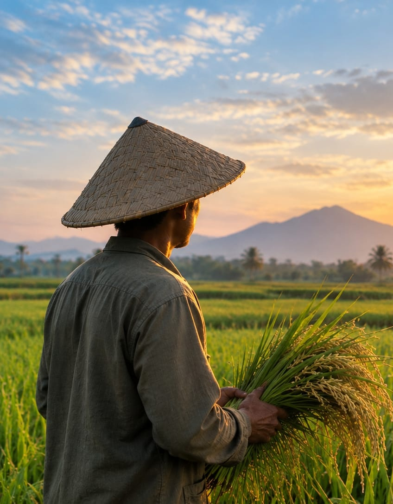
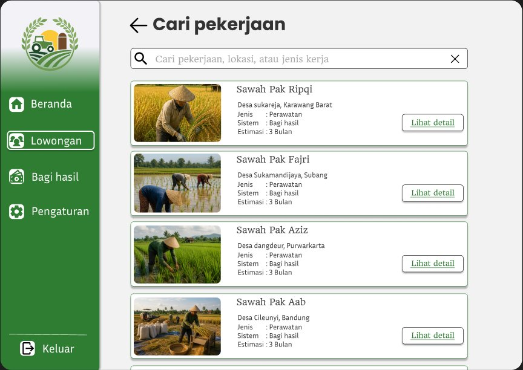
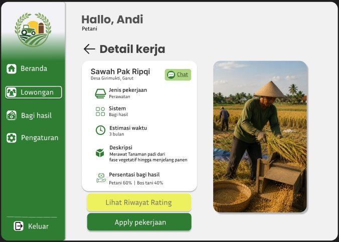
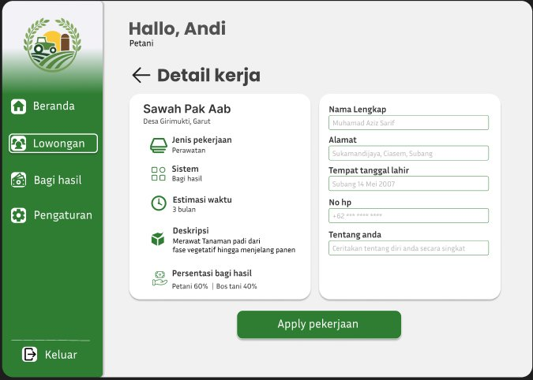
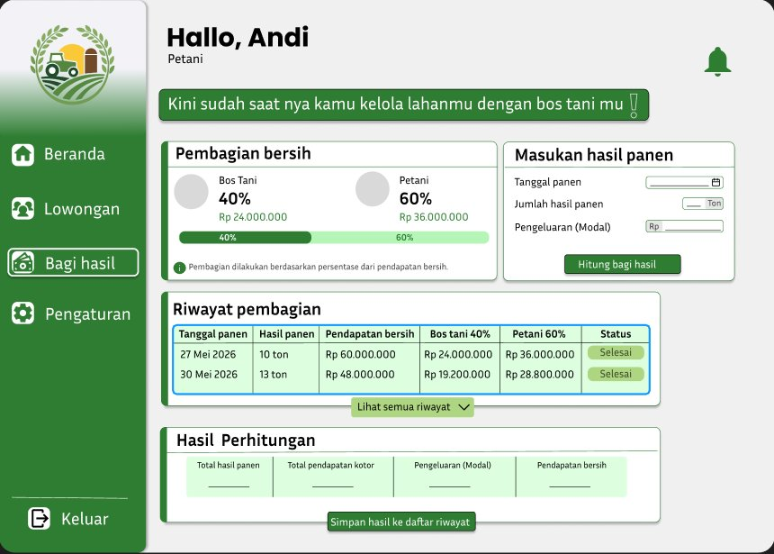

Lowongan lahan
Cari pekerjaan berdasarkan nama, lokasi, atau jenis kerja, langsung dari satu daftar.
Platform digital petani dan bos tani
FARM mempertemukan petani dengan bos tani, mencatat progres kerja, dan menghitung bagi hasil otomatis. Semuanya jelas dan tercatat di satu tempat.
Sudah punya akun? Masuk di sini

Fitur
Dari mencari kerja sampai membagi hasil panen, tiap langkahnya sudah ada.
Cari pekerjaan berdasarkan nama, lokasi, atau jenis kerja, langsung dari satu daftar.
Jenis kerja, sistem, estimasi waktu, deskripsi, dan persentase bagi hasil terlihat sebelum melamar.
Form singkat untuk melamar. Data dari profil terisi otomatis, tinggal cek dan kirim.
Bos tani memasang lowongan lengkap dengan foto lahan dan persentase bagi hasil.
Lihat profil dan cerita singkat pelamar, lalu terima atau tolak dengan satu klik.
Pantau tahap pekerjaan, lokasi kerja, dan persentase kemajuan di Beranda.
Masukkan hasil panen dan modal. Pendapatan bersih dan pembagiannya langsung terhitung.
Riwayat pembagian tersimpan rapi, dan petani bisa melihat rating bos tani sebelum apply.
Cara kerja
Buat akun dalam satu menit, lalu lengkapi profil.
Buka detail kerja dan cek bagi hasilnya.
Isi form singkat. Bos tani langsung menerima lamaranmu.
Masukkan hasil panen, pembagiannya terhitung otomatis.
Buat akun dan atur profil lahanmu.
Isi detail kerja, foto lahan, dan persentase bagi hasil.
Baca profil pelamar, terima yang cocok.
Lihat progres kerja, lalu hitung pembagian saat panen.
Intip dashboard
Menu di kiri, isi di kanan. Gampang dipakai, juga di HP.




Simulasi bagi hasil
Geser hasil panen dan isi modalnya. Pendapatan bersih langsung dibagi 40% untuk bos tani dan 60% untuk petani.
Memakai harga contoh Rp 8.000.000 per ton. Angka asli mengikuti kesepakatan kalian.
Modal melebihi pendapatan, jadi belum ada yang dibagi.
FAQ
Petani mencari dan melamar pekerjaan. Bos tani memposting lowongan, memilih pelamar, dan memantau progres. Keduanya memakai hitungan bagi hasil yang sama.
Pembagian dihitung dari pendapatan bersih, yaitu hasil panen dikurangi modal. Contoh di sini memakai 60% untuk petani dan 40% untuk bos tani, dan persentasenya selalu terlihat di detail kerja.
Masuk sebagai petani, buka menu Lowongan, pilih Lihat detail, lalu Apply pekerjaan dan isi form singkatnya.
Masuk sebagai bos tani, buka menu Posting job, isi detail kerja, lalu tekan Posting lowongan. Lowongan langsung tampil di daftar petani.
Ini masih versi pengembangan. Data tersimpan di database MySQL. Login Google/Facebook masih mode demo.
Pilih perannya, buat akun, dan mulai dari lowongan atau postingan pertamamu.